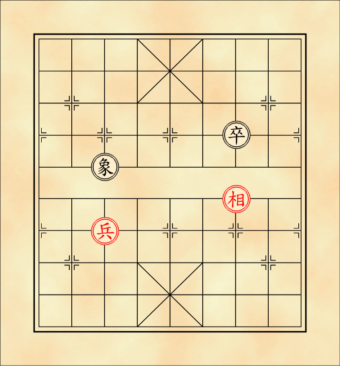
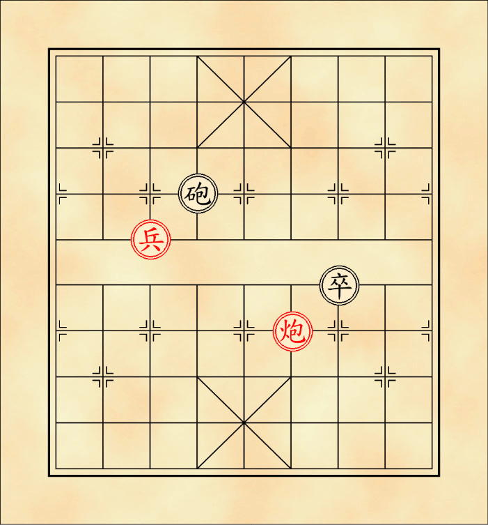

หมากรุกจีน
จุก(เบี้ย)
สีดำจะใช้ตัวอักษร 卒 ส่วนสีแดงจะใช้ตัวอักษร 兵 ตัวแทนพลทหารราบ ด่านหน้ากล้าตาย บุกแล้วไม่มีถอย เมื่อข้ามแม่น้ำจะถูกเลื่อนยศให้มีอำนาจการเดินเพิ่มขึ้น มี 5 ตัวตลอดทั้งเกม กติกาการเดินเบี้ยมีดังนี้
ก่อนข้ามแม่น้ำ เดินตรงไปข้างหน้าได้เพียงจุดเดียว สามารถกินหมากในจุดที่เดินได้ (เดินตรง – กินตรง ต่างจากหมากรุกชาติอื่นที่มักจะเดินตรง – กินเฉียง)
ตำแหน่งการเดินเบี้ยก่อนข้ามแม่น้ำ
หลังข้ามแม่น้ำ(เลื่อนยศ) จะมีอำนาจการเดินเพิ่มขึ้นคือเดินไปในแนวตรงด้านข้างได้อีกด้านละจุด แต่ยังคงไม่สามารถเดินถอยได้ สามารถกินหมากในจุดที่เดินได้
ตำแหน่งการเดินเบี้ยหลังข้ามแม่น้ำ